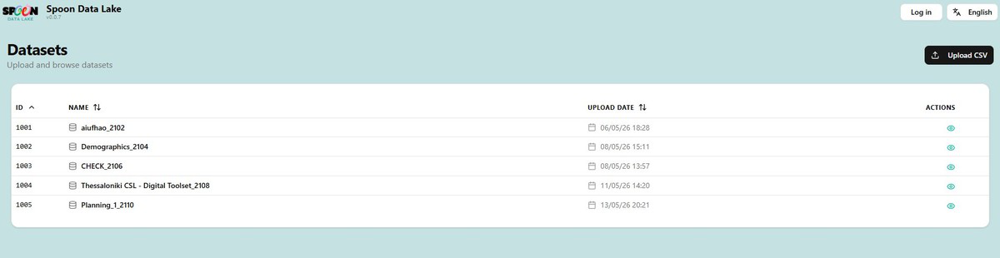
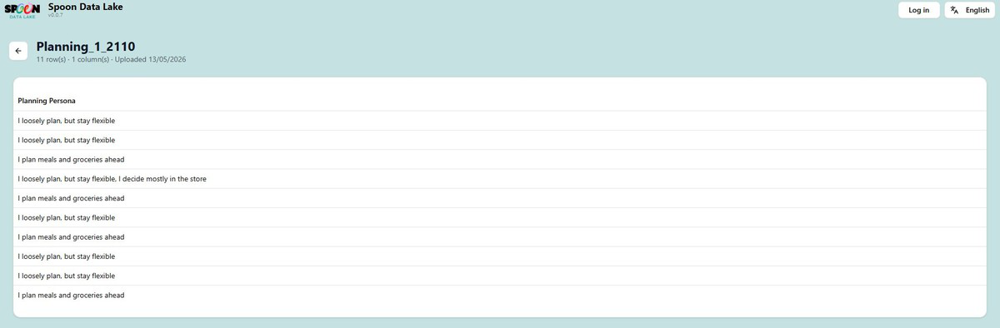

Spoon Data Lake¶
Overview¶
The Spoon Data Lake (v0.0.7) at lake.datau.jibe.cloud is the centralised data repository for the SPOON research programme. A Jibe-owned component and a key deliverable of Work Package 2, DataLake v1.0 was completed in March 2026. It stores, organises, and provides access to anonymised datasets collected through SPOON studies — primarily from questionnaire responses exported by researchers.
The Data Lake is designed for research teams who need to explore aggregated, anonymised results from citizen-participation studies. It is the bridge between raw data collection (the Questionnaire Tool) and downstream analysis — a clean, structured, privacy-safe environment for browsing study results.
The Data Lake operates under partition-by-purpose access rules: data is only accessible to authorised parties for the specific purposes for which it was collected. All personally identifiable information is automatically anonymised before storage, preserving analytical value while remaining GDPR-compliant. Current datasets include studies from multiple European cities such as Thessaloniki, covering topics like demographics, food planning, and digital toolset usage.
Getting started¶
- Navigate to https://lake.datau.jibe.cloud.
- Click Explore the lake to go directly to the Datasets list, or Log in (top-right) to authenticate.
- Once logged in, you can view all datasets and upload new ones.
Browsing datasets¶
The Datasets page lists all uploaded files in a sortable table with columns:
- ID — unique numeric identifier (e.g. 1001, 1002)
- Name — dataset name, typically including a study-code suffix (e.g.
Demographics_2104) - Upload Date — date and time the dataset was uploaded
- Actions — eye icon (👁) to open and view the dataset
Sort columns by clicking the column headers. Click the back arrow (←) to return to the datasets list from a detail view.
Figure 4.1 — Data Lake datasets list with sortable columns and Upload CSV button

Figure 4.2 — Dataset detail view showing anonymised Planning Persona data

Uploading a dataset¶
- Go to the Datasets page.
- Click Upload CSV (top-right button).
- Select a CSV file from your computer — the first row must contain column headers.
- The dataset appears immediately in the list with a new ID and the current timestamp.
Anonymisation¶
Sensitive fields are automatically anonymised before storage. For example, an address field appears
as [ADDRESS_b36f7056] — a unique but non-identifiable token. This ensures GDPR compliance while
preserving data structure for research purposes.
Researchers never see real personal identifiers
The mapping between anonymised tokens and real identities is controlled exclusively by the DataU platform.